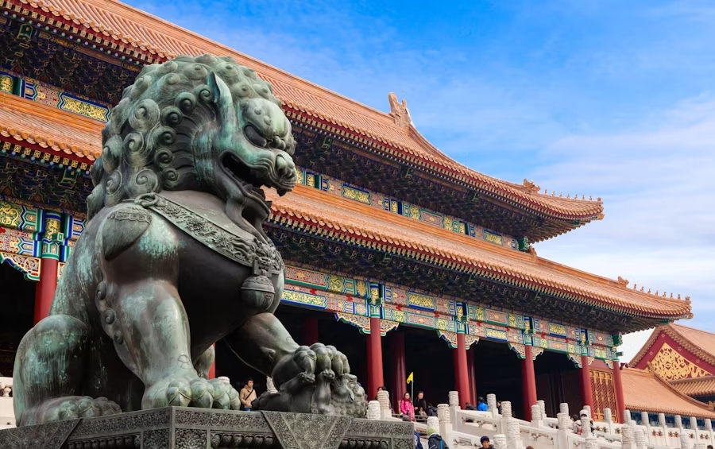

Chinese Architectural History
Historical Development in China
Chinese architecture has a history stretching over 3,000 years, rooted deeply in Confucian and Daoist philosophies. Ancient builders prioritized harmony with nature, symmetry, and axial alignment, as seen in imperial palaces like the Forbidden City and religious temples throughout the country.
From the Great Wall to ancient Siheyuan homes, traditional Chinese structures reflect political order, family values, and spiritual beliefs. Dynastic shifts often brought new architectural innovations, yet the emphasis on balance and symbolism remained a consistent cultural thread.
